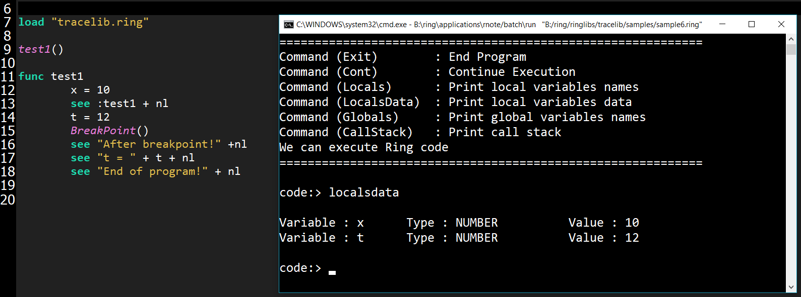
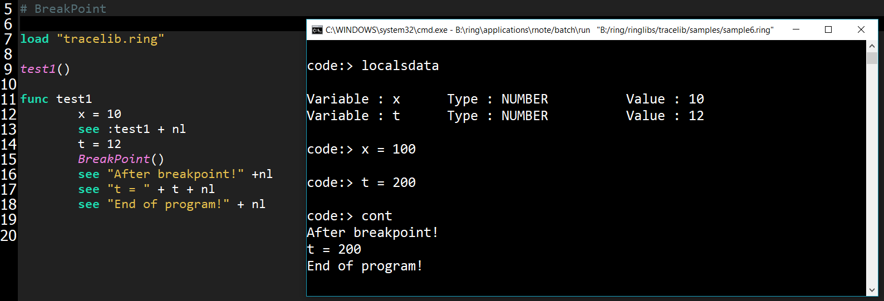
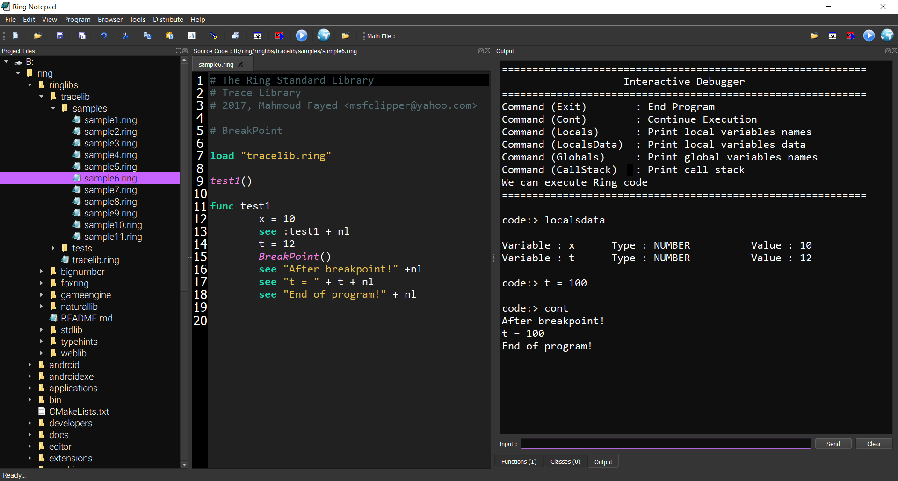

The Trace Library and the Interactive Debugger¶
In this chapter we will learn about the Trace Library and the Interactive Debugger
Loading the Trace library¶
To start using the Trace library, We must load it first!
load "tracelib.ring"
Trace All Events¶
The next example demonstrates the Trace library usage to trace all events.
# Trace All Events
trace(:AllEvents)
see "Hello, world!" + nl
see "Welcome" + nl
see "How are you?" +nl
mytest()
new myclass { mymethod() }
func mytest
see "Message from mytest" + nl
class myclass
func mymethod
see "Message from mymethod" + nl
Trace control flow between functions¶
The next example demonstrates the Trace library usage to trace the control flow between functions.
Trace(:Functions)
test1()
func test1
see :test1 + nl
test2()
func test2
see :test2 + nl
see test3() + nl
func test3
see :test3 + nl
return "test 3 output"
Pass Error¶
The next example demonstrates the Trace library usage to pass an error!
Trace(:PassError)
test1()
func test1
x = 10
see :test1 + nl
test2() # Runtime Error!
see "We can continue!"
Interactive Debugger¶
The next example demonstrates the Trace library usage to use the Interactive Debugger
Trace(:Debugger)
test1()
see "good bye!" + nl
func test1
x = 10
see :test1 + nl
t = 12
test2() # Runtime Error!
see "After Error!" +nl
see "t = " see t see nl
see "x = " see x see nl
Execute Program Line by Line¶
The next example demonstrates the Trace library usage to execute the program line by line!
Trace(:LineByLine)
test1()
func test1
x = 10
see :test1 + nl
t = 12
test2()
see "After Error!" +nl
see "t = " + t + nl
BreakPoint¶
The next example demonstrates the Trace library usage to stop at a breakpoint!
test1()
func test1
x = 10
see :test1 + nl
t = 12
BreakPoint()
see "After breakpoint!" +nl
see "t = " + t + nl
see "End of program!" + nl
Disable BreakPoints¶
The next example demonstrates the Trace library usage and how to disable the Breakpoints!
NoBreakPoints()
test1()
func test1
x = 10
see :test1 + nl
t = 12
BreakPoint()
see "After breakpoint!" +nl
see "t = " + t + nl
see "End of program!" + nl
Using the Interactive Debugger¶
The next example uses a Breakpoint to open the Interactive Debugger!
load "tracelib.ring"
test1()
func test1
x = 10
see :test1 + nl
t = 12
BreakPoint()
see "After breakpoint!" +nl
see "t = " + t + nl
see "End of program!" + nl
Screen Shots:
We have the Interactive Debugger at the Breakpoint!

We can print the variables values
We can change the variables values then continue execution
We can run the Interactive Debugger in the Output Window
